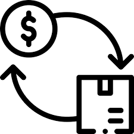

Everything You Need to Know About Trading-In Your Gaming Items.

Trade-In Details
Trade-in prices will be based on market prices for the item(s). You get 50% of the market value in cash or 66% in in-store credit. It is completely up to you. Items purchased with in-store credit from trade-ins qualify for points. The cash minimum is $10. The item(s) you want to trade in must have a market value of at least $20.
You must be a member to trade-in. You can join when you first bring items into the store to trade in. All trade-ins are registered to a customer.
Items cannot be mechanically or functionally damaged in any way. The item(s) must function at 100% in the appropriate way they were designed to. If an item does not properly function at all or requires unorthodox methods to function, the item(s) cannot be traded in.
Note: Items will be tested when brought in. Make sure they work!
Modified products are allowed, but the modifications must be specified (ex: extra storage, custom paint job, etc.). Cosmetic modifications, such as a wrap or case, must be removed. If the case is in good condition, it is able to be traded in. Wraps cannot be traded.
Any games must come in their appropriate case. If the case is from the appropriate type of game but has no label, there is a $5 deduction to the value (it reduces the visual appeal to customers). Games in cases with different games are not allowed. The case must match the game or be a blank case of the appropriate type.
Cosmetic damage is allowed, but it reduces the value. Any items with extreme cosmetic damage are not allowed for trade-in.
Digital keys for games, in-game content, or rewards are not allowed for trade-in. Physical keys with a scratch-off are allowed, but they can't be redeemed or have the key revealed in any way. If the code is revealed or redeemed, it can't be bought or sold. If you lie about a key being redeemed, your membership is terminated, and anything you have bought from End Mode Games is returned. You will NOT get any money back, nor will you be able to shop in our store. Customers who were scammed by a key get an End Mode Games gift card equal to the value lost.
Items that are traded in are based on condition, which is based on cosmetic damage. The conditions are: like-new, lightly damaged, and moderately damaged. There will be a 15% deduction for lightly damaged products and a 25% deduction for moderately damaged products. Like-new products will have no deduction.
Items bought from the store cannot be traded in until one month after purchase. Exclusive or limited edition items bought from the store cannot be traded back due to heavy market value flux. Obviously, keys cannot be brought back.
If you bring in a console, laptop, or PC, make sure it has been through a hard reset. This means that all accounts, data, and games have been removed. If the device is not cleared, a $5 service fee is automatically applied.